Ishihara Color Plates
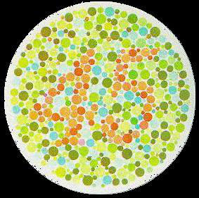
Plate 1
Normal vision: 45; Color blind: no number
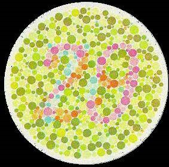
Plate 2
Normal: 29; Color blind: 70
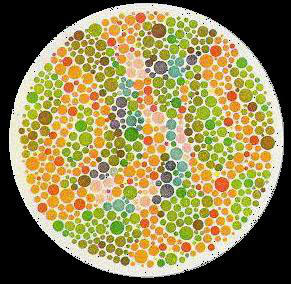
Plate 3
Normal: no number; Color blind: 5
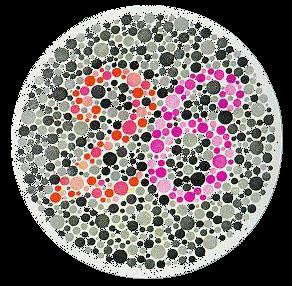
Plate 4
Normal: 26; Protanopia: 6; Deuteranopia: 2
Comprehensive color vision test plates: detect protanopia, deuteranopia, red-green color blindness, protanomaly, deuteranomaly.
Color vision results reference table
| Plate |
Normal result |
Color blind result |
Type |
Notes |
| 图1-1 | 6 | 6 | - | 示例图 |
| 图1-2 | 6,9,8 | - | - | - |
| 图1-3 | 3,6 | 不能读 | 红色盲 | 检出红色盲 |
| 图1-4 | 6,6 | 不能读 | 红绿色盲 | 检出红绿色盲 |
| 图1-5 | 6 | 全不能或都部分不能读 | 绿色弱 | 绿色弱分类总图 |
| 图1-6 | 9 | - | - | - |
| 图2-1 | 8，0，6 | 不能读 | 红色盲 | 红色盲检出图 |
| 图2-2 | 3 | 不能读 | 红色弱 | 红色弱分类总图 |
| 图2-3 | 5 | - | - | - |
| 图2-4 | 6,8,9 | 不能读 | 绿色盲 | 绿色盲检出总图 |
| 图2-5 | 金鱼 | - | - | - |
| 图2-6 | 鸭，兔 | 鸭 | 红绿色觉异常 | 检出红色盲，部分色弱 |
If you are identified as color blind/weak, don't be discouraged. Genetics determine it. Use the following to further determine the type.
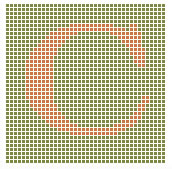
In this plate, A indicates protanopia
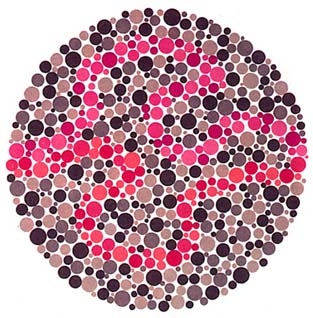
In this plate, C indicates deuteranopia
Here, protanopes find only the purple line; deuteranopes only the red line; others can find both.
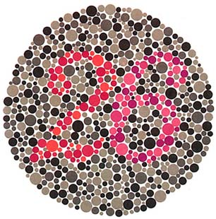
Here, protanopes read 6; deuteranopes read 2; others read both.
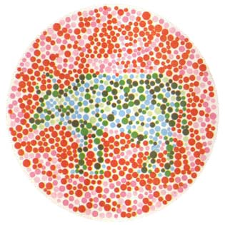
Normal vision: sees a cow. Seeing a dog may indicate deficiency.
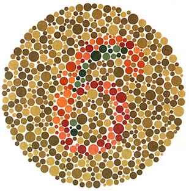
Normal: 6; Red-green deficiencies: 5; Achromatopsia: no digits.
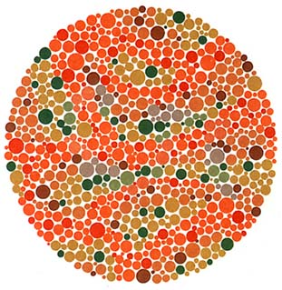
Red-green deficiencies: often 5; Achromatopsia/normal: often none.
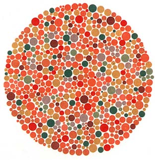
Red-green deficiencies: often 6; Normal/achromatopsia: often none.
How to Use the Color Vision Test
Test your color vision using Ishihara color plates to detect various types of color blindness and color vision deficiencies.
Instructions
- Look at each color plate carefully
- Try to identify the numbers or patterns in each plate
- Compare your results with the reference table
- Note any plates where you see different numbers than expected
- Use the results to understand your color vision type
Test Plates Overview
- Basic Plates (1-4): Initial screening for color vision issues
- Comprehensive Plates (5-18): Detailed testing for specific color deficiencies
- Classification Plates: Determine specific types of color blindness
- Reference Table: Compare your results with expected outcomes
Color Vision Types
- Normal Vision: Can see all numbers and patterns correctly
- Protanopia: Red-blind, cannot distinguish red from green
- Deuteranopia: Green-blind, cannot distinguish green from red
- Protanomaly: Red-weak, reduced sensitivity to red
- Deuteranomaly: Green-weak, reduced sensitivity to green
- Tritanopia: Blue-blind, cannot distinguish blue from yellow
Examples
Example 1 - Plate 1:
Normal vision: sees "45"
Color blind: sees no number
Example 2 - Plate 4:
Normal vision: sees "26"
Protanopia: sees "6"
Deuteranopia: sees "2"
How to Interpret Results
- Compare what you see with the reference table
- Note any discrepancies between your vision and normal results
- Look for patterns in which plates you can/cannot see
- Use the classification plates to determine specific type
- Consult an eye care professional for official diagnosis
Common Use Cases
- Self-assessment of color vision
- Pre-employment screening for color-dependent jobs
- Educational purposes and awareness
- Family history of color vision issues
- Curiosity about personal color perception
Important Notes
- This is a screening test, not a medical diagnosis
- Results may vary based on screen settings and lighting
- Consult an eye care professional for official testing
- Some conditions may not be detected by this test
- Color vision can change over time
Factors Affecting Results
- Screen brightness and contrast settings
- Room lighting conditions
- Eye fatigue or strain
- Age-related changes in vision
- Medications that affect color perception
Professional Testing
- Comprehensive eye examination
- Specialized color vision testing equipment
- Genetic testing for inherited conditions
- Assessment of impact on daily activities
- Recommendations for accommodations if needed
Living with Color Vision Differences
- Most people adapt well to color vision differences
- Technology can help with color identification
- Certain careers may have restrictions
- Support groups and resources are available
- Focus on abilities rather than limitations